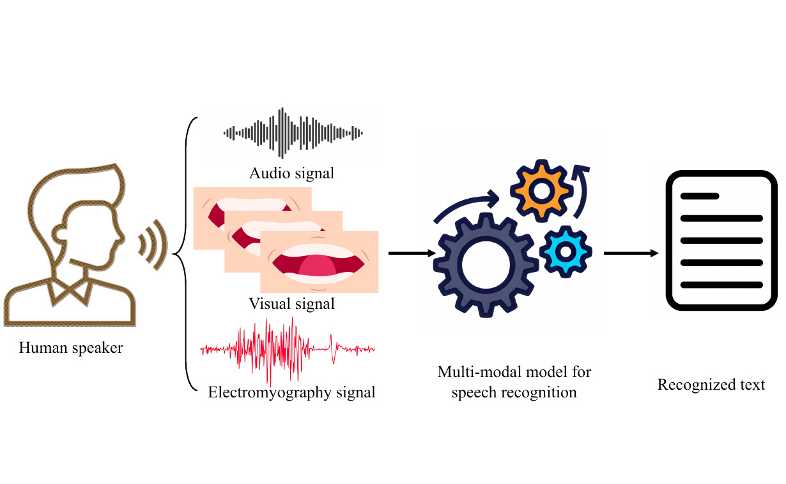
Dongliang Zhou, Yakun Zhang, Jinghan Wu, Xingyu Zhang, Liang Xie, and Erwei Yin
IEEE Transactions on Human-Machine Systems, 2025
周栋梁，博士/博士后，IEEE高级会员，现为天津大学人工智能学院副研究员。于哈尔滨工业大学（深圳）获得计算机科学与技术博士学位，并在该校从事博士后研究工作，合作导师为聂礼强教授。研究方向包括多媒体计算、多模态学习以及生成式模型。主持博士后面上基金项目和博士后国资计划项目各1项，主持中央***委重点项目课题1项，参与多项国家自然科学基金仪器专项、联合基金和面上项目，在 CCF A 类期刊/会议以及 IEEE Trans. 发表论文10余篇，发表学术专著一部。目前担任CSIG视觉感知智能系统专委会执行委员，某IEEE国际标准工作组Vice Chair，Applied Intelligence 副编辑、Applied Soft Computing 编委以及《智能系统学报》青年编委。
研究生招生：每年招收硕士研究生 1–2 名。欢迎对学术研究有兴趣、勤奋踏实、积极主动、具有良好自驱力的同学联系我。课题组注重科研兴趣、研究投入与学术训练，适合有明确发展目标并愿意认真参与科研工作的同学。
本科生科研：欢迎对科研有兴趣的本科生加入课题组，常年招募本科生参与科研项目。申请者原则上应具备以下条件：已修完《数据结构》、《计算机程序设计》等相关课程，或具有相应知识基础；熟练掌握至少一门编程语言；具备良好的沟通与协作能力；每周能够稳定投入不少于 20 小时。对于表现优秀且投入稳定的本科生，期望在 1–1.5 年内完成一项具有较高学术水平的研究工作。当前科研方向主要包括图像生成与具身智能，并以 CCF-A 或 ACM/IEEE Trans. 级别成果为努力目标。
本科生竞赛：鼓励本科生参与各类学科竞赛，如中国大学生数学建模竞赛、美国大学生数学建模竞赛、“挑战杯”等。可提供相应指导和支持（本人具有上述比赛全国一等奖（序1）获奖经历），欢迎有相关基础或兴趣的同学了解与参与，亦支持跨学院组队合作。

Dongliang Zhou, Yakun Zhang, Jinghan Wu, Xingyu Zhang, Liang Xie, and Erwei Yin
IEEE Transactions on Human-Machine Systems, 2025
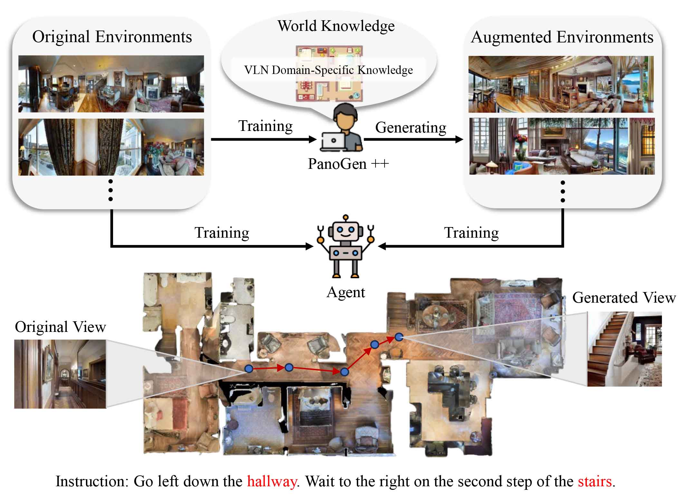
Sen Wang†, Dongliang Zhou†,✉, Liang Xie, Chao Xu, Ye Yan, and Erwei Yin
Neural Networks, 2025
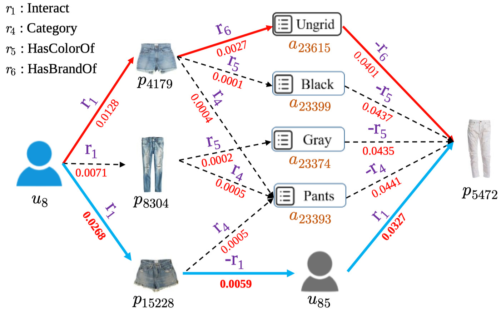
Advanced Multimodal Compatibility Modeling and Recommendation
Weili Guan, Xuemeng Song, Dongliang Zhou, and Liqiang Nie
Springer Book, 2025
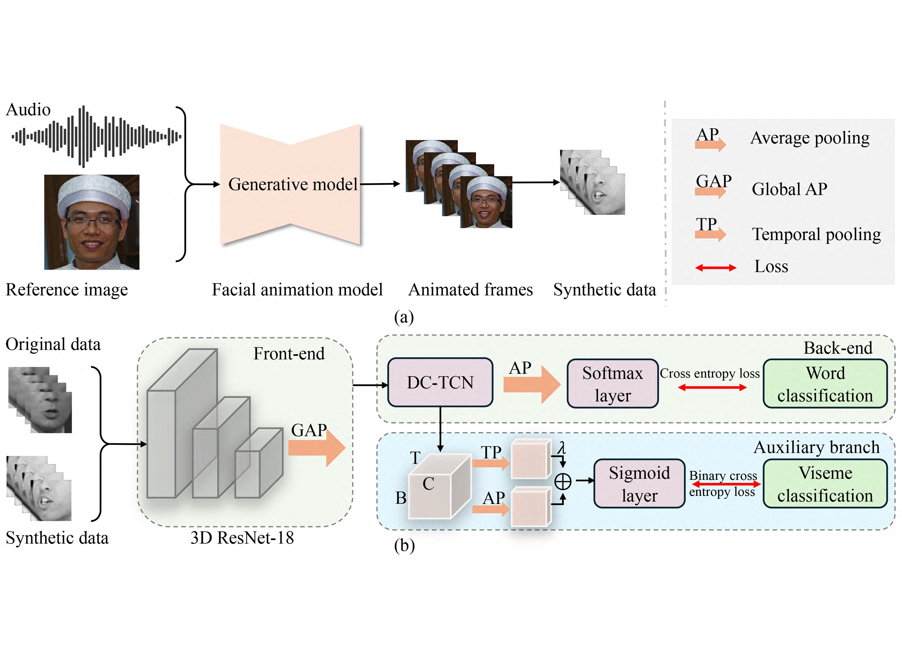
LipGen: Viseme-Guided Lip Video Generation for Enhancing Visual Speech Recognition
Bowen Hao†, Dongliang Zhou†, Xiaojie Li, Xingyu Zhang, Liang Xie, Jianlong Wu, and Erwei Yin
IEEE International Conference on Acoustics, Speech, and Signal Processing, 2025
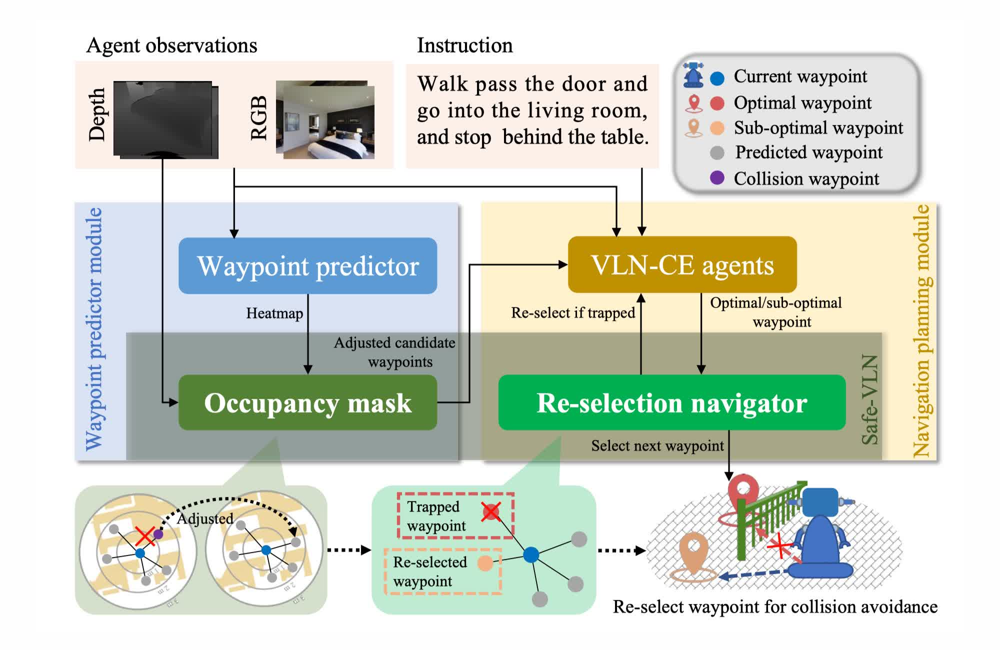
Lu Yue, Dongliang Zhou, Liang Xie, Feitian Zhang, Ye Yan, and Erwei Yin
IEEE Robotics and Automation Letters (also presented at IROS 2024 oral), 2024
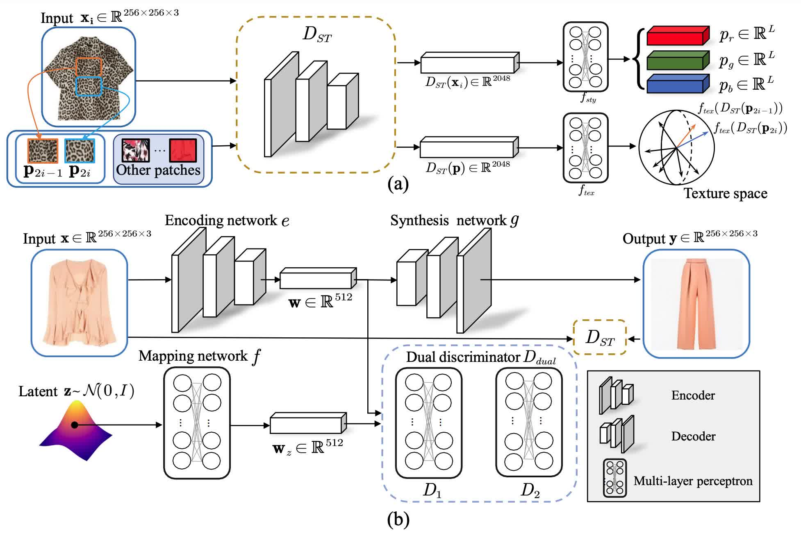
Minglong Dong†, Dongliang Zhou†, Jianghong Ma, and Haijun Zhang
IEEE International Conference on Acoustics, Speech, and Signal Processing, 2024
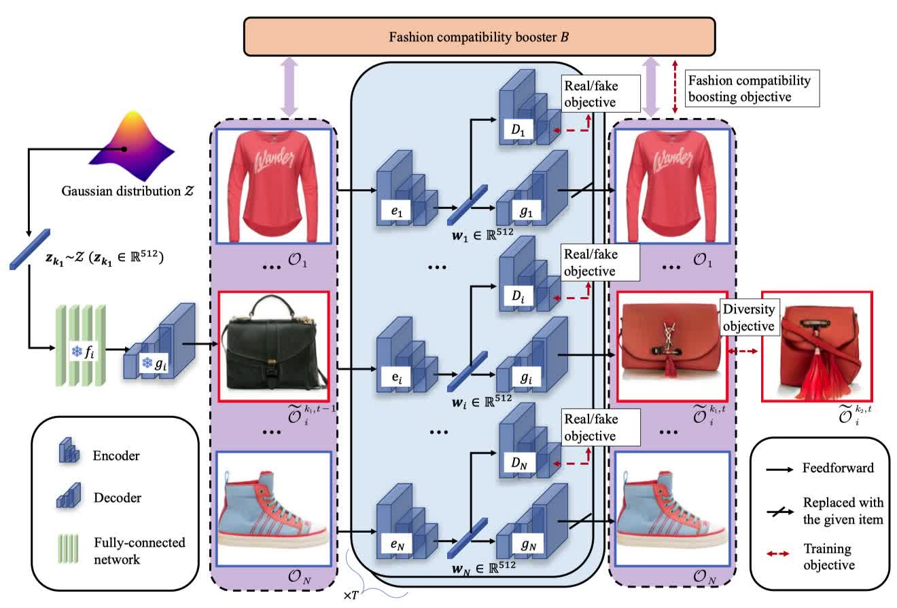
Dongliang Zhou, Haijun Zhang, Jianghong Ma, Jicong Fan, and Zhao Zhang
ACM International Conference on Multimedia, 2023
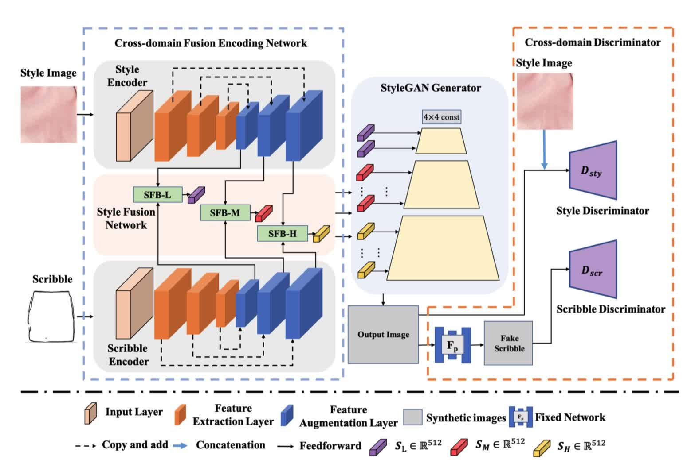
Toward Intelligent Interactive Design: A Generation Framework Based on Cross-domain Fashion Elements
Jianyang Shi, Haijun Zhang, Dongliang Zhou, and Zhao Zhang
ACM International Conference on Multimedia, 2023
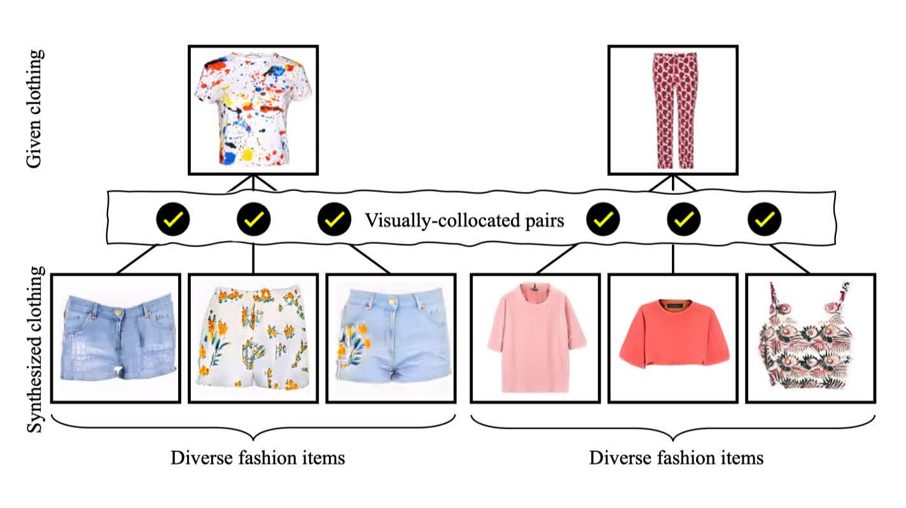
BC-GAN: A Generative Adversarial Network for Synthesizing a Batch of Collocated Clothing
Dongliang Zhou, Haijun Zhang, Jianghong Ma, and Jianyang Shi
IEEE Transactions on Circuits and Systems for Video Technology, 2024
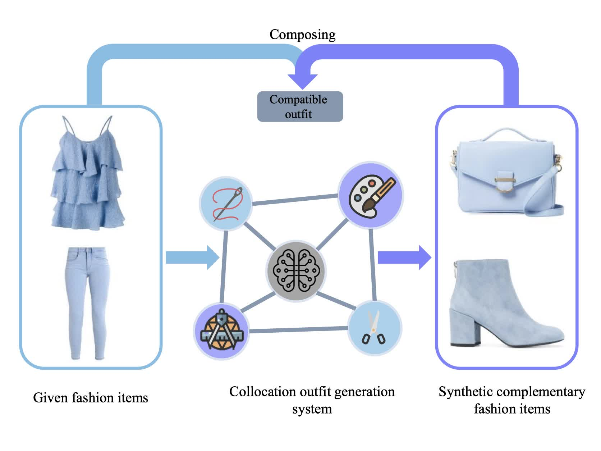
Dongliang Zhou, Haijun Zhang, Qun Li, Jianghong Ma, and Xiaofei Xu
IEEE Transactions on Multimedia, 2023
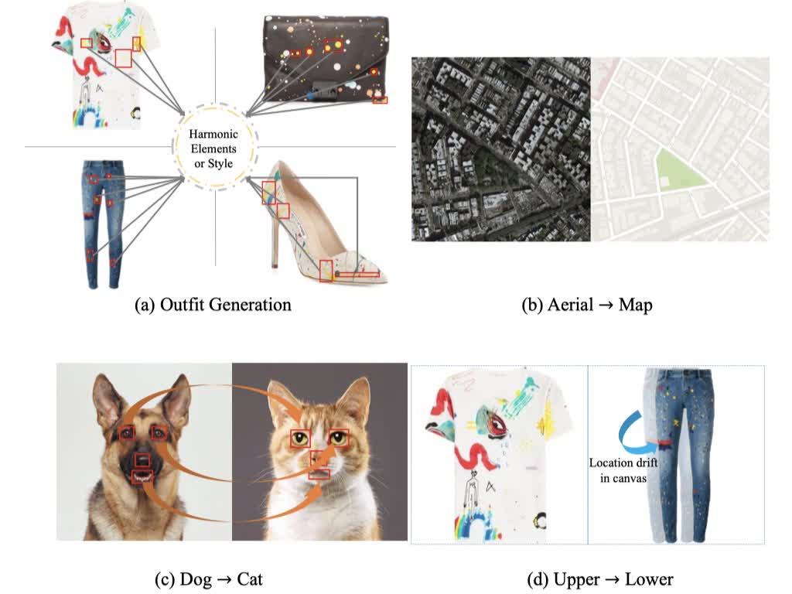
Dongliang Zhou, Haijun Zhang, Kai Yang, Linlin Liu, Han Yan, Xiaofei Xu, Zhao Zhang, and Shuicheng Yan
IEEE Transactions on Neural Networks and Learning Systems, 2024
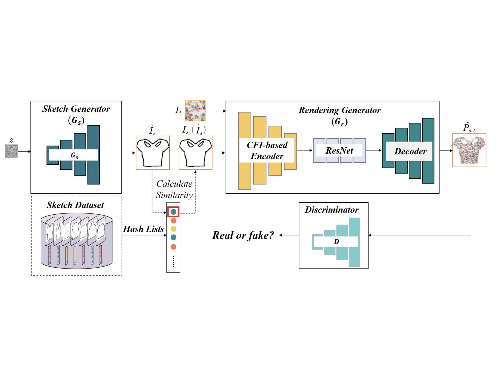
Han Yan, Haijun Zhang, Linlin Liu, Dongliang Zhou, Xiaofei Xu, Zhao Zhang, and Shuicheng Yan
IEEE Transactions on Multimedia, 2023